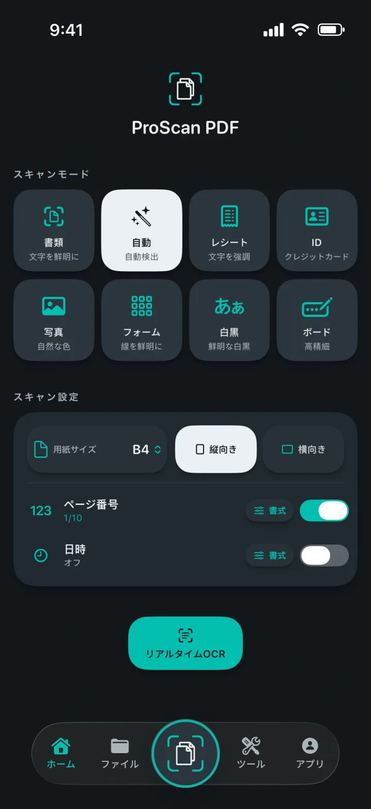
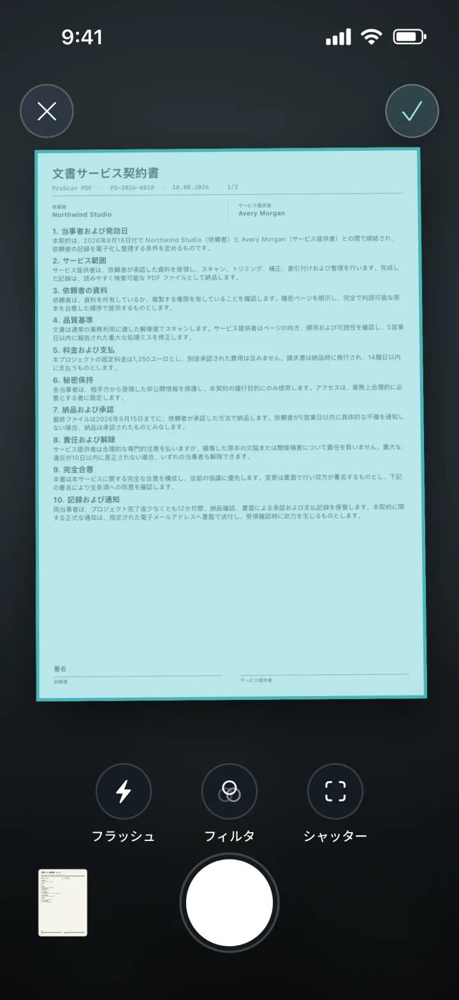
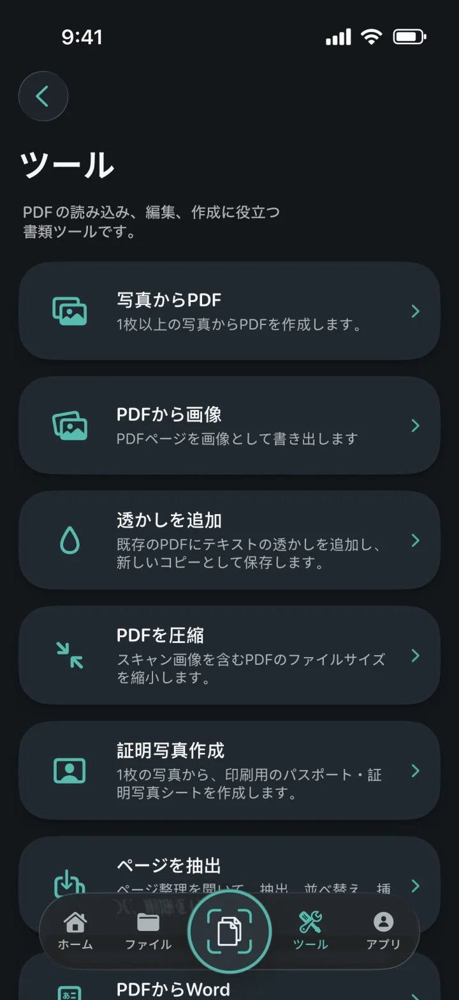
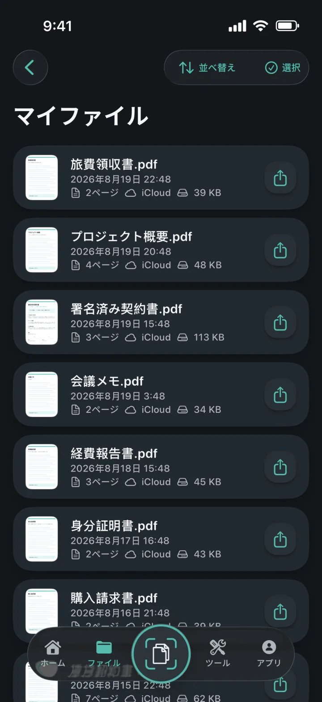
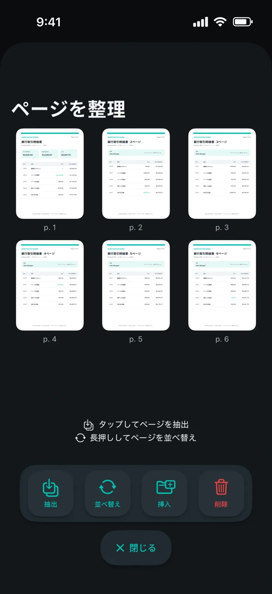
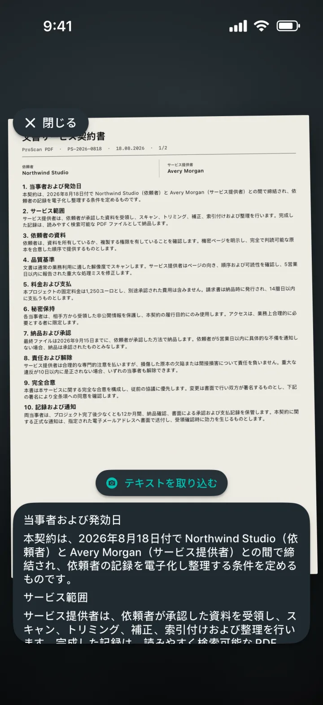

写真からPDF
1枚または複数の写真を見やすいPDFに変換します。
ページを理解するスマートスキャナー
書類、レシート、身分証明書、メモ、写真を見やすいPDFに変換。そのまま編集、署名、保護、共有まで行えます。広告も透かしもありません。

ページを理解するスマートスキャナー
用途に合うモードを選び、ページを画面に収めたら、撮影はAppleの書類スキャナーにおまかせ。開始前に用紙サイズ、向き、ページ番号、日時を設定できます。

PDFツールをひとつに
ひとつの使いやすい画面からPDFの読み込み、変換、編集、作成ができます。

1枚または複数の写真を見やすいPDFに変換します。
PDFの各ページを画像として書き出し、保存または共有できます。
新しいPDFコピーに色付きの文字透かしを追加します。
スキャン済みPDFや画像ベースのPDFを小さくします。
トリミングと確認を行い、正確なサイズや印刷用シートとして書き出します。
PDFページの抽出、並べ替え、挿入、削除ができます。
可能な範囲でレイアウトを保ちながら、編集可能なWordファイルを作成します。
検索可能なコピーを作成し、ビューア内で文字を探せます。


書類をいつでも整理
ローカルコピーによりライブラリをすばやく開けます。プライベートなiCloudバックアップを使えば、別のAppleデバイスに移行した後も書類を利用できます。
プライバシーを最優先に設計
スキャン、OCR、PDF処理はすべて端末内で行われます。ProScan PDFが書類を独自のサーバーへアップロードすることはありません。
プライバシーポリシーを読むOCRと検索可能な書類
リアルタイムで文字を取り込み、スキャンから編集可能な内容を抽出し、検索可能なPDFコピーを作成。すべてiPhoneまたはiPad上で処理されます。

自分らしく使えるデザイン
テーマごとにアプリの外観が変わり、ホーム画面用の専用アイコンも用意されています。
グラファイトにスキャナーティールとペーパーホワイト。
深いブラックにエレクトリックシアンとバイオレット。
明るい紙面にすっきりしたブルーの操作部。
柔らかなチャコールにコーラル、バイオレット、ミント。
洗練されたミッドナイトネイビーにシャンパンとブラッシュ。
グラファイトにクールシルバーと磨かれたゴールド。
深いフォレストグリーンに温かなクリームとテラコッタ。
英語、ドイツ語、スペイン語、フランス語、イタリア語、オランダ語、ポーランド語、ブラジルポルトガル語、ヨーロッパポルトガル語、トルコ語、簡体字中国語、日本語、韓国語、ヒンディー語に対応しています。
よくある質問
プライバシー、保存場所、ProScan PDFでできることを分かりやすくご案内します。
いいえ。ProScan PDFはアプリ内に広告を表示せず、スキャンした書類に透かしも追加しません。
主要なスキャン、OCR、PDFツールは端末上で動作し、オフラインでも使えます。iCloudバックアップと共有にはネットワーク接続が必要です。
書類はすぐに開けるようアプリ内のローカルライブラリに保存されます。iCloudを利用できる場合は、プライベートなバックアップをお使いのiCloudアカウントに保存できます。
写真からPDF、PDFから画像、透かし、圧縮、証明写真作成、ページ抽出と整理、PDFからWord、検索可能PDF、結合、署名、パスワード保護を利用できます。
毎日3回まで無料でスキャンできます。Proではスキャン回数が無制限になり、すべてのProツールを利用できます。

次の書類も、ワンタップで
広告なし。透かしなし。